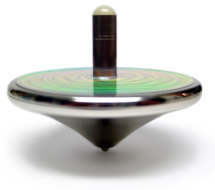

What You Should Know - K'NEX: Design and Test a Spinning Top
 Important Vocabulary
Important Vocabulary
- Conservation of Angular Momentum - a law of physics that explains how something that spins wants to keep spinning in the same circle until some other force changes its spinning motion
- Friction - the resisting force created by one surface rubbing against another
- Place Value - the position of a digit in a number that shows how much the digit is worth (example: in 24, the 2 is in the tens place, meaning the 2 is worth two tens or 20)
- Base-Ten Numerals - in our number system, there are ten digits (0-9) that are used to create numbers (example: 1-0, then after reaching 9 in the ones place, you start over in the ones place with 0 and move a 1 to the next place value with 10)
- Number Names - numbers written in word form (example: 57 is written as fifty-seven)
- Expanded Form - numbers written in a way that breaks apart each place value into an addition sentence (example: 57 could be written as 50 + 7 or (5 x 10) + (7 x 1))
- Comparing Numbers - You can compare multi-digit numbers by looking at place values and the symbol for “greater than” >, the symbol for “less than” <, and the symbol for “equal to” =
What Is Conservation of Angular Momentum?
What keeps your bicycle from falling over? It is the same thing that keeps a spinning top upright.
Physics tells us that an object in motion tends to stay in motion.
The same idea applies to spinning objects, like a top. When a top is spinning in a circle, it wants to keep turning in the same circle until some other force changes its spinning motion. In fact, the faster the object spins, the harder it is for any "wobbling" forces to tip it over. Scientists call this conservation of angular momentum.
This law of physics is also what helps keep your bicycle from falling over. You may have even noticed that the faster your wheels spin, the easier it is to stay upright. The faster an object moves, the more difficult it is to change its motion.

Why Does Friction Matter?
No matter what, at least one outside force will act against the spinning top’s motion.
Friction is the resisting force created by one surface rubbing against another. Since a top spins on a tiny point, there is not a lot of friction with the surface it is spinning on. This means a good top will spin for a long time. Nevertheless, there is always some friction, so the top will eventually be slowed down to the point where gravity will be able to tip it over.
If the tip of the spinning top rubs against the table, friction acts against it. There is even a little bit of friction from the outside of the top rubbing against the air. This is called drag.
As the top is slowed down by these forces, it becomes easier for the force of gravity to make it wobble and fall over.
Place Value and Base 10
Can you believe that all of the numbers that you have ever seen are made up of the same ten digits? Our number system is a base-ten system, meaning that there are ten digits (0, 1, 2, 3, 4, 5, 6, 7, 8, 9) that are used to create numbers. When a number reaches 9 in one place value, you move to the next place value and start over at 1. For example, when you are counting, you go from 9 to 10.
Place value helps you determine how much a digit is worth. How do you know that $20 is more than $2? Our number system uses a base-ten place value system! You can figure out the worth of a digit by looking at its place within a number. Since the 2 in 20 is in the tens place, you know that it represents two tens. Since tens are bigger than ones, you know that 20 is greater than 2.
As you move to the left, each place value is ten times bigger than the next. Look at the place value chart below that shows the place value names. The place values can go on forever as numbers grow and grow! This place value stops in the millions place. What patterns do you notice in the place value names?

Writing Numbers in Different Forms
You can write numbers in several different ways. The most common way to write numbers is using base-ten numerals. As you have already learned, you write numbers using the digits 0 through 9. When you write a number using base-ten numerals, you write them using digits. Examples of base-ten numerals are 1,456 and 67. This is also called standard form.

You can also write numbers the way that you would say them out loud. You can write numbers using number names by writing them in word form. For example, the number 32 could be written as thirty-two. Use a hyphen (-) between the tens and ones place in numbers greater than twenty. Numbers like 115 are written as one hundred fifteen. When writing and saying numbers, be careful not to say “and”. The word “and” is only used when a number has a decimal.
What does it mean when something expands? It grows or stretches. The last way to write a number is using expanded form. This is a way of writing numbers that show each place value stretched out into an addition sentence. There are two ways to write in expanded form. Let us look at the number 74. To write this number in expanded form, you want to break it apart by place value. We could write 74 as 70 + 4.
Another way to write expanded form is to show each place value as a multiplication sentence. In 74, there is a digit in the tens place and the ones place. You can write the digit 7 as (7 x 10) because there is a 7 in the tens place, or seven tens. You can write the 4 as (4 x 1) because there is a 4 in the ones place, or four ones. After putting those pieces together, the expanded form for 74 would be (7 x 10) + (4 x 1).
Comparing and Ordering Numbers
Sometimes it can be helpful to compare numbers. When you compare numbers, use the symbols >, <, and =. Each symbol has its own meaning.
The > symbol means “greater than.” When using this symbol, start with the bigger number. An example is 43 > 6. This comparison would be read out loud as “forty-three is greater than six.”
The < symbol means “less than.” When using this symbol, start with the smaller number. An example is 6 < 43. This comparison would be read out loud as “six is less than forty-three.”
The = symbol means that two numbers are equivalent. 63 = 63 is an example.
It can be tricky to remember which symbol stands for greater than or less than. Remember that the open part of the symbol always points towards the bigger number.
When you compare numbers, look at each place value one at a time, starting in the largest place value. We start in the largest place value because we want to figure out which number as a whole is bigger. Sometimes it can help to line up the numbers vertically by place value. For example, look at the picture below. Since the hundreds place is the same, we would move to the next place value to compare the numbers. We keep moving to the right until we find a place value that is different. Then, we can compare the numbers.

Numbers can also be ordered to show how they grow from least to greatest or decrease from greatest to least. Make sure to carefully read the directions each time you order numbers so that you know which order to place them in. If we were given the numbers below and had to put them in order from greatest to least, we would start by comparing the numbers to figure out which is the greatest. We would then put them in order from the biggest number to the smallest number.

Career Connection and Real-World Application
Conservation of Angular Momentum in Careers
Conservation of angular momentum allows objects that are in motion to stay in motion unless they are stopped by a force like friction. We have already discussed the examples of riding a bike and spinning a top, but there are other real-world applications of this law of physics. Have you even spun in an office chair? Pulling your arms closer to your body will make you spin faster, while spreading your arms out will slow you down.

Have you ever watched the winter Olympics? Figure skaters use conservation of angular momentum when doing their routines. To spin faster, figure skaters bring their arms close to their bodies and crouch down. When they are ready to stop spinning, they spread their arms and stand up. Figure skaters also use place value. They may need to determine the length of time that it takes them to do their routine, and round that time to the nearest minute to make sure they do not go over their allotted time in the program.